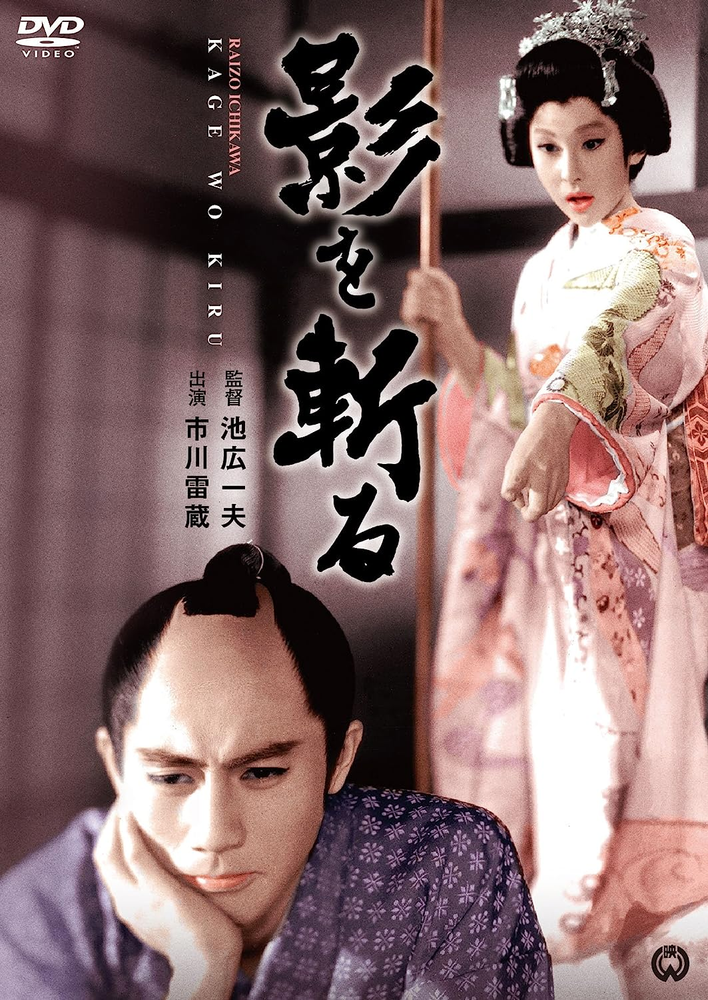

字幕仅供个人兴趣学习，不得商业化和付费。如有其他字幕翻译是基于我提供的字幕，敬请标明出处。
Note:
Subtitles are only for personal use, no commercialized purpose or distribution for money. If you want to share them, please include proper ciation(s) to my site. If you want to translate to other languages based on the subtitles I provide, please cite the source in your subtitle. Thanks.

胭脂虎影 / 影を斬る (Kage o Kiru / Cut The Shadow) 是池广一夫于1963年导演，小国英雄脚本，齐藤一郎音乐，市川雷藏 / 瑳峨三智子主演的电影。英文字幕由coralsundy自费出资，jls001999听译制作完成。有少许错漏和语句不够流畅，可全程完整欣赏电影，适用于01:22:09的版本。
注：胭脂虎其实是一出京剧剧名，又叫“会稽城”和“元帅牵马”。内容是演唐代扬州妓女石中玉因不愿做皇帝的妃嫔，逃到会稽和军营副将王行瑜订了婚约。事被元帅李景让得知，将二人拿到帅府，责备石中玉不该引诱将官。石中玉侃侃申辩，李更发怒，下令将二人斩首，三军不服而鼓噪；李的母亲急忙出堂，赦了二人，责备李景让，重定军心。这时庞勋攻城，众将不敌，李景让惶急无计，石中玉自告奋勇愿去退兵，但要李认她为义妹，并且要亲自代她扛刀牵马，李景让不得已一一照办，石中玉果然擒住了庞勋，得胜回城。
本剧中的女主，有胆有识，还会武功，所以借了这个名字“胭脂虎”然后再加个“影”，用于贴合日语片名原来的意思。
(感谢微博步亭先生帮助提供中文译名，并解释以上背景提要)
Kage o Kiru / Cut The Shadow (1963) is a 1963 movie directed by Kazuo Ikehiro, with notable stars Raizo Ichikawa and Michiko Saga.
Translation/Subtitle: jls001999 (jls001999@gmail.com)
Review/Proofreading: coralsundy (coralsundy@gmail.com)
(Paid by coralsundy for the translation, personal use only)
中文字幕: 尚无
English Subtitle: Kage.o.Kiru.aka.Cut.The.Shadow.1963.eng.01-22-09.BYjls001999.rev1.srt
SUBHD: https://subhd.tv/a/551494
IMDB: https://www.imdb.com/title/tt0165342/
DOUBAN: https://movie.douban.com/subject/24719833/
More Movie Subtitles on My Website: CLICK HERE
胭脂虎影 / 影を斬る / Kage o Kiru aka Cut The Shadow 1963 Subtitle (English) is published on 2023-06-13.